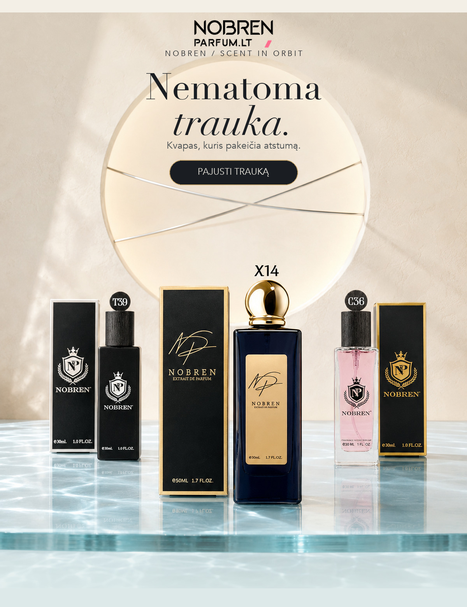
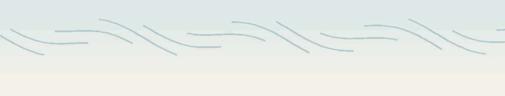
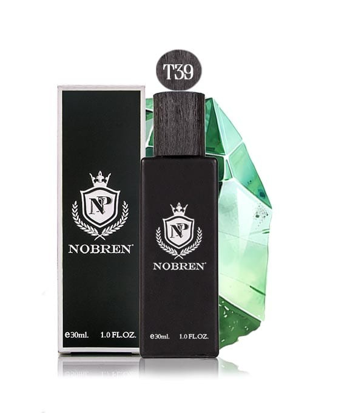
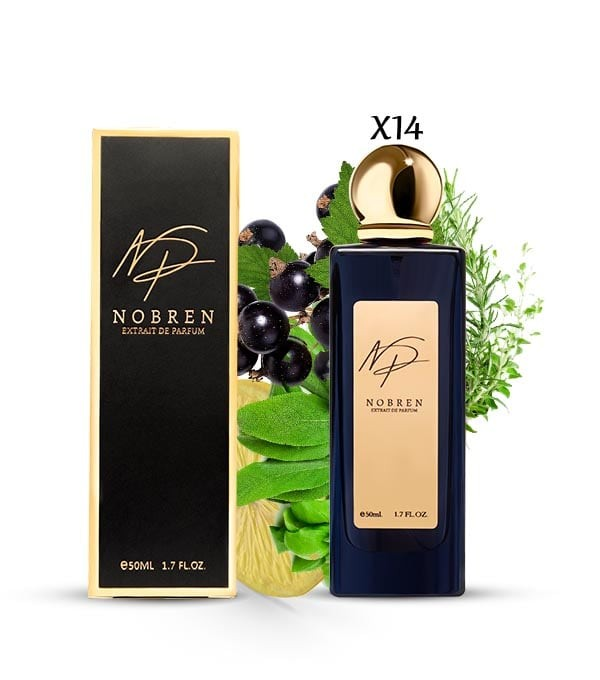
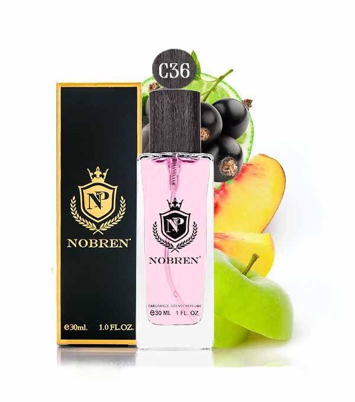
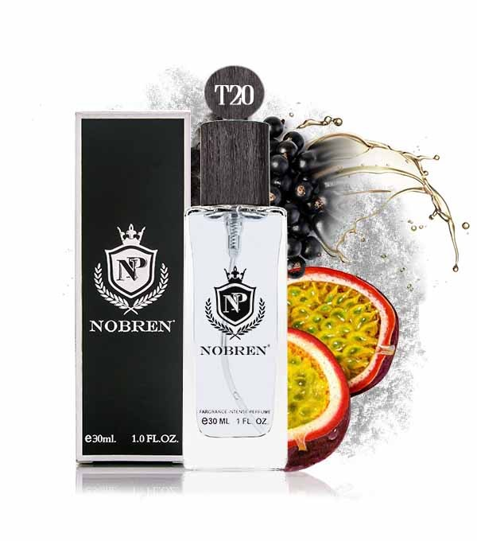
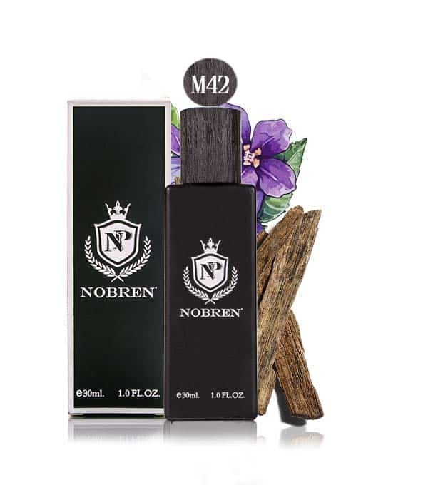
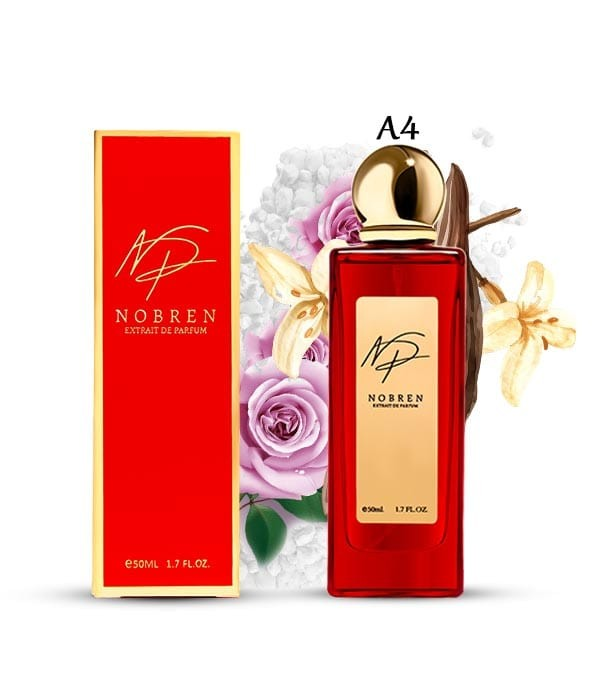

 |
|
NEMATOMA JĖGA
Kvapas neužima vietos.
Jis ją pakeičia.
Pirmiausia jis lieka arti odos. Tada kuria aurą. Galiausiai – prisiminimą. Šešios kompozicijos, šeši skirtingi traukos laukai.
|
 |
|
TRIJŲ ORBITŲ MODELIS
Kiekvienas kvapas juda
trimis atstumais.
Nuo artimiausio pojūčio iki to, kas lieka ilgiau už pačią akimirką.
|
|
BRANDUOLYS
Tai, ką jauti arčiausiai savęs.
|
|
AURA
Tai, ką pastebi esantys šalia.
|
|
PĖDSAKAS
Tai, kas lieka erdvėje ir atmintyje.
|
ODA → ARTUMAS → ATMINTIS
|
|
|
THE GRAVITY NOTE
RYŠKUMAS ≠ TRAUKA
Ne viskas, kas stipru,
traukia arčiau.
Įspūdį kuria ne vien intensyvumas. Svarbiausia – kaip natūraliai kvapas susilieja su tavo buvimu ir kiek ilgai išlieka atmintyje.
RYŠKUMAS Kiek greitai kvapą pastebi. |
|
ATMINTIS Kiek natūraliai norisi prie jo sugrįžti. |
|
|
|
NOBREN ORBITAL EDIT / 06 SCENTS
Šeši traukos laukai.
Pradėk nuo natos. Sugrįžk dėl įspūdžio.
|
LAUKAS 01 / ŽALIASIS RYTAS Arbata, mėta, citrina ir bazilikas. |
 | ORBITA 01 · UNISEX T39 · Green Pearl AROMATINIS Arbata · žalios natos · obuolys · samanos |
|
 | ORBITA 02 · UNISEX X14 · Torino 21 AROMATINIAI Mėta · citrina · juodieji serbentai · bazilikas |
|
| |
LAUKAS 02 / VAISIŲ ŠVIESA Persikai, obuoliai, serbentai ir pasiflora. |
 | ORBITA 03 · MOTERIMS C36 · Aventus ŠYPRO / VAISIŲ Persikai · obuoliai · juodieji serbentai |
|
 | ORBITA 04 · UNISEX T20 · Cassiopea ŠYPRO / GĖLIŲ Pasiflora · baltasis muskusas · tongapupė |
|
| |
LAUKAS 03 / BALTASIS ŠLEIFAS Liepų žiedai, jazminai, jūros druska ir ozoninės natos. |
 | ORBITA 05 · UNISEX M42 · Tilia GĖLIŲ / MEDIENOS / MUSKUSO Liepų žiedai · sambakiniai jazminai · heliotropai |
|
 | ORBITA 06 · UNISEX A4 · Arabia Magic RYTIETIŠKI / GĖLIŲ Jūros druska · ozoninės natos · vanilė · praline |
|
|
|
FINAL ORBIT
Kvapas, prie kurio
norisi sugrįžti.
Šešios skirtingos kompozicijos. Viena taps tavo nematoma trauka.
|
|
|